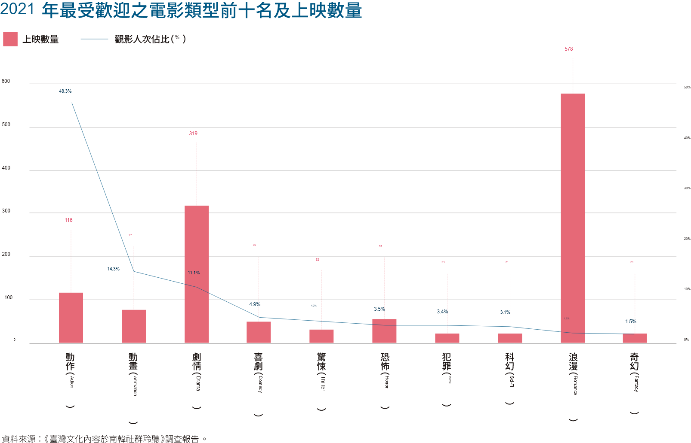

從選題到轉譯打造故事力──以CCC創作集經驗為例
IP能否成功，引起閱聽眾共鳴是重要關鍵第一步。前置作業中資料收集影響故事力的底蘊，素材該如何轉譯為有魅力的故事呢？
要成就一個膾炙人口的IP，從IP本身經營到外力整合都相當重要，而能否跨域發揚光大至成就IP宇宙，最關鍵當然是IP的故事力，扎實的內容才有無限延伸的空間，而前期醞釀深深影響IP本質的好壞。
「CCC創作集數位平台」身為文策院所支持的原創漫畫平台，除了打造專屬於臺灣漫畫的舞台，編輯陪伴創作者孵育作品也是重要使命之一。以資料轉譯備受肯定的《CCC創作集》，如何在大量資料中找到有趣的素材變成好閱讀的故事呢？本篇以《CCC創作集》孵育的三部作品來探討創作過程中，編輯如何協助漫畫家收集轉譯消化大量資料，變成有趣的故事。今年（2022）甫獲國際漫畫大賞，史實改編的《異人茶跡》在不能變動歷史的情況下如何取捨事件？曾榮獲總統選書，發生在日治大正時期的《採集人的野帳》則遇到了時代細節的挑戰，以及點閱突破50萬的《無能戀愛諮商中心》更因為貼近現代，引起讀者共鳴的同時，情節也會被細細檢視。
蒐羅史材去蕪存菁，成就十年經典之作《異人茶跡》一窺臺灣烏龍茶發跡之史
獲得日本國際漫畫大賞肯定的《異人茶跡》，從2013年發行至今邁向系列完結篇，講述1865年臺灣烏龍茶從混種茶配品到外銷金雞母的故事。以真實歷史事件延伸而成，故事該如何具有張力並合乎史實發展，選題就下了一番功夫。漫畫家張季雅身為嘉義茶農子女，從小耳濡目染製茶流程，但轉譯這段歷史需要更多的功課與擴寫。

系統性整理繁雜資料，才能找出脈絡輔助創作
《異人茶跡》主編温淳雅表示首先著手整理年表，包括主角生平、臺灣烏龍茶發展、當時臺灣的歷史事件與世界重大事件多重比對，找出彼此可能的互相影響，讓故事格局更加宏觀相扣。歷史事件與人物雖無法改變，卻能從史料中的蛛絲馬跡刺激出更多想像。

《異人茶跡》中深獲漫迷喜愛的配角陳家茶農一家，就是發現當時自福建安溪遷移臺灣的移民，曾攜帶茶種至臺種植自行飲用，但後來如何轉型成產業耕種呢？激發了張季雅對後續發展的疑問，而這個想像與史實連接，將陶德（John Dodd）與李春生貸款予農民推廣新茶種植，與茶農如何衝突及化解，搭配茶農角度觀點，經典橋段於焉誕生，豐厚了故事的張力。

收集資料是為了激發創作的可能，而不是想像的束縛
歷史事件不能杜撰，但在冰冷文字記述下的大事記，透過創作者的想像就能變成有趣的故事，套句張季雅說的：「歷史是死的，有溫度的是人」，在尋找史料的過程，會更加了解陶德與李春生的性格與價值觀，激發出更多創作的想像，「但有時也會因為新的史料出土而手忙腳亂」，主編笑著說，這就是轉譯歷史的醍醐味吧！
獲總統選書 ！ 大量史料與專家協助
完美呈現《採集人的野帳》
故事設定在大正時期（1924年）——臺灣植物標本採集黃金年代，草藥行少東踏上植物採集之旅，雖是虛構角色與情節，但資料收集的功夫並不少，書中出現的植物與建築都必須符合年代，避免與歷史產生衝突。

《採集人的野帳》大量繪製各種植物與標本，需謹慎確認繪製的植物品種在當時是否已出現，因此編輯任容向植物及臺灣史專家多重請益，透過專家們的指導和大量研讀史料，從一花一葉的正確形狀、到主角們的食衣住行都盡量符合時代，務求不出錯。
如何調整史實的框架VS創作想像的衝突
編輯任容分享，專家有專業領域的熱情，卻不一定熟悉漫畫模式，編輯在其中協助溝通與調查相當重要，該如何平衡漫畫家的想像與專家的顧慮是必然的挑戰。像是《採集人的野帳》有一段描述深山中山賊從事非法行為，被主角一行人發現引發危機，漫畫家英張本來設定為盜採牛樟芝，但專家反應當時並無盜採記載，英張便將情節改為山賊種植罌粟製作鴉片私售。為了支援這段劇情製作，需要查詢眾多製造鴉片方法的資料，甚至前往日本國會圖書館挖出數位化日文史料翻譯成中文，才能在不與史實衝突的情況下保留精彩橋段。


大正時期的繁花蔓草與屋舍磚瓦，都來自大量考據
繪製歷史題材作品，有許多基本細節要注意，例如劇情出現失火橋段，需要翻閱當時報紙尋找消防員服裝和水車的照片，儘管在漫畫裡只出現一格，卻大大增加臨場感。此外，主角等人所住的植物園宿舍現已拆除，編輯也調查日治時期文學作品、總督府的官舍建築標準等研究，配合現存的日式宿舍建築，拼湊出可能的宿舍面貌，「有點像是古裝劇的道具組，默默建構的背景不一定會被注意到，但少了一定會失去韻味。」
生活圈取材才能貼近現實，故事節奏一擊即中的《無能戀愛諮商中心》
以《T子%%走》引爆異色漫畫話題的穀子，於「CCC創作集數位平台」連載的《無能戀愛諮商中心》，敘述老是愛上直男的GAY沈青與肉食女吳婕的故事，節奏分明的異色笑點為本作特色，既然是發生於現代的故事，在取材消化上或許相對輕鬆？編輯林宜柔苦笑否定，正因為發生於讀者生活的時代，能否引發共鳴成為左右故事成功的關鍵。

從漫畫家挖掘到提案輔助， 編輯是讀者也是守門員
編輯林宜柔表示改編自同名漫畫的日劇《下輩子我再好好過》給她很大的啟發，原來四格漫畫也有機會改編成日劇，因此她從發現穀子的作品產生邀約想法，穀子擅長短篇卻具力道的節奏式敘事，擁有豐富創意與大膽想法，一開始甚至想取名為《婊子與GAY天長地久》，雖相當切合內容，但考慮可能太過辛辣，在編輯建議下使用了新作品名《無能戀愛諮商中心》，正反映了編輯與漫畫家的關係是收放與推拉的平衡。
大量田野調查，創造出讀者心中的金孫角色打動人心
《無能戀愛諮商中心》將主角沈青設定為服裝設計系學生，但穀子並非該科系出身，在取材上費盡苦心，默默追蹤了該系學生們的IG，研究行為習慣與科系特色，編輯也鼓起勇氣搭訕邀約學生們，直接進行面對面取材，更協助穀子前往學校發表會體驗，種種用心的前置作業反映到作品中，許多讀者留言表示故事與角色太過真實，宛如在看自己學生時代的血淚史，而這份共鳴就歸功自編輯與漫畫家大量取材、消化，讓角色形象立體生動。同時，角色的喜怒哀樂就更容易牽動讀者的心，尤其是沈青在故事後段戀愛不順時，讀者們紛紛化身為「沈青阿嬤」，哭求漫畫家要給個快樂結局。無法忍受角色的不幸，正是角色經營成功的證明。
好的文筆或畫工不一定代表能產生好故事，除了別出心裁的創意切入引爆話題，各種背後功夫更是輔助成功的關鍵，越完整、有細節的設定，自然能引起更多閱聽眾共鳴，這也是為什麼《CCC創作集》著力於轉譯。
動人的故事來自前設細節的累積
好的文筆或畫工不一定代表能產生好故事，除了別出心裁的創意切入引爆話題，各種背後功夫更是輔助成功的關鍵，越完整、有細節的設定，自然能引起更多閱聽眾共鳴，這也是為什麼《CCC創作集》著力於轉譯。臺灣擁有自己的歷史與傳說，而如何挖掘史料或新聞短短的隻字片語成為故事、成為議題，就需要靠故事力完善創作，媒合優秀的創作者與臺灣文化，創作出更多屬於臺灣各形各色的故事，畢竟貼近土地的故事，與生活在其上的我們最有共鳴。
熱愛閱讀、漫畫、流行體驗與BTS，專職媒合臺漫的可能，CCC平台的飼育員，歡迎來信討論任何合作發想溝通：celia@taicca.tw。